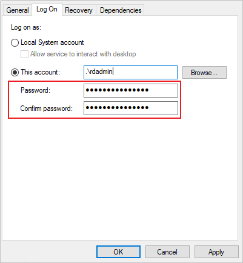

The client functions as a data connection component between the OceanProtect and production environment and performs process control and data transmission during backup and restoration. Before backing up and restoring data, you need to install the client on the host. This section describes how to log in to the background of the host where the client is to be installed and manually install the client.
Precautions
If the Windows host where the client is to be installed is a domain controller and the client needs to be installed on multiple domain controllers in the domain, install the client on domain controllers one by one.
Prerequisites
- Ensure that the client is not installed on the host. You can run the sc query rdagent command on the host for query. If the command output indicates that the specified service is not installed, the client is not installed.
- Ensure that the C:\mnt directory on the host is not mounted. You can run the mountvol command on the host for query.
- You have obtained the IP address of the host where the client is to be installed. The IP address must be able to communicate with the backup network of the OceanProtect.
- You have obtained the username and password for logging in to the host.
- The language for installing the client and the OceanProtect must be the same as the OS language of the host where the client is to be installed. Otherwise, information may be displayed in multiple languages or as garbled characters on the client or the OceanProtect. In this case, reinstall the client and the OceanProtect with the same language or change the OS language.
Procedure
- Download the client software package on the OceanProtect WebUI. For details, see Downloading a Client Software Package.

If the client software package fails to be downloaded using Internet Explorer 11 on Windows Server, rectify the fault by referring to What Should I Do If I Fail to Download the Client Software Package Using Internet Explorer 11 on the Windows Server?.
- Ensure that the time of the host where the client is to be installed is the same as that of the OceanProtect device.
- For an OceanProtect X series backup appliance, perform the following steps to check the device time of the OceanProtect:
- Choose System > Infrastructure > Cluster Management.
- On the Backup Clusters tab page, click a node name under the Local Cluster Nodes area.
- On the Node Details page that is displayed, view the current device time.
If the time is inconsistent, change the time of the host where the client is to be installed. Otherwise, the client installation may fail. For details, see How Do I Change the Time Zone and Time of the Host?.
- For the OceanProtect E6000 Appliance, perform the following steps to check the device time of the OceanProtect:
- Choose System > Infrastructure > Cluster Management.
- On the Cluster Management page, click View Cluster Details.
- On the Cluster Details page that is displayed, view the current device time.
If the time is inconsistent, change the time of the host where the client is to be installed. Otherwise, the client installation may fail. For details, see How Do I Change the Time Zone and Time of the Host?.
- For an OceanProtect X series backup appliance, perform the following steps to check the device time of the OceanProtect:
- If the Windows host where the client is to be installed is a domain controller and the client needs to be installed on multiple domain controllers in the domain, perform this step to delete user rdadmin. Otherwise, skip this step.
You can run the wmic computersystem get domainrole /value command on the host to check whether the host is a domain controller. If DomainRole=4 or DomainRole=5 is displayed in the command output, the host is a domain controller.
- Log in to the host where the client is to be installed as a system administrator.
- Press Win+R to open the Run window.
- Enter cmd to access the command prompt window.
- Run the following command to delete user rdadmin:
net user rdadmin /delete
- Install the client.
- Log in to the host where the client is to be installed as a user in the Administrators user group.
- Upload the client software package to the host and decompress it.
The software package name cannot contain spaces. Otherwise, the client installation will fail.
- Go to the software package directory and install the software.
- To specify the service IP address used for registration, perform this step. Otherwise, go to 4.c.ii.
- Go to the ..\DataProtect_xxx_client_general_windows\DataProtect_xxx_client_general_windows\conf directory, where xxx indicates the client version.
- Open the client.conf file and add eip=XXX.XXX.XXX.XXX to the end of the file, where XXX.XXX.XXX.XXX indicates the service IP address used for registration.
- Install the software.
- Go to the ..\DataProtect_xxx_client_general_windows\DataProtect_xxx_client_general_windows directory, where xxx indicates the client version.
- Double-click install.bat and install the software as prompted.
- When the following information is displayed, enter the client installation directory as prompted: If you press Enter without entering any information, the software is installed in C: by default.
"You need to enter the installation path (directly press 'Enter' use default installation path C:)." Please enter custom install path:
- If information similar to the following is displayed, ensure that the time of the host where the client is to be installed is the same as the OceanProtect device time and enter y:
The current host time and time zone are Thu 08/17/2023 17:17:34.87. Check whether the time and time zone are the same as those on DataBackup time:(y|n): Your choice:
- When the following information is displayed, enter the private key password set when you download the client software package:
Please enter the private key password set on ProtectManager, you still have 3 chances: Enter password:
- When the following information is displayed, set the password of user rdadmin:
Add User rdadmin Enter password:
- For 1.5.0SPC19 and later versions: When the following information is displayed, determine whether to enable source deduplication:
Whether enable dataturbo service:(y|n): Your choice:
If you enter y, source deduplication is enabled. Ensure that the free memory of the host where the client is to be installed is greater than 2 GB. The system will automatically install OceanStor DataTurbo. For details about the OSs that support source deduplication, refer to OceanProtect Compatibility Query.
If you enter n, source deduplication is disabled. You can also manually install OceanStor DataTurbo after installing the client. For details, see Installing OceanStor DataTurbo.
If LAN-free configuration needs to be performed for the client, enable this function.
After source deduplication is enabled, the system automatically installs OceanStor DataTurbo on the host where the client is installed and creates user dataturbo whose directory is C:\Users\dataturbo. Do not delete or modify the user and user directory.
after source deduplication is enabled, add the SID (S-1-5-18) of user system to the ...\oceanstor\dataturbo\conf\whitelist whitelist and run the sc stop dataturbo and sc start dataturbo commands in sequence to restart the DataTurbo service.
- For 1.5.0SPC19 and later versions: If the following information is displayed, determine whether to use an EIP or an IP address after NAT based on actual requirements.If EIPs are mapped to VPC IP addresses, enter an EIP. If the host where the client is to be installed communicates with the OceanProtect through NAT and the IP addresses before and after NAT are mapped in one-to-one mode, enter the IP address after NAT.
Check whether the agent ip will be redirected?(Such as EIP or the ip transformed by NAT):(y|n), default(n) Your choice:
- If the client has been installed, the system is upgraded to 1.5.0SPC19 or later, and an EIP or IP address after NAT that is mapped to a VPC IP address is used, you need to uninstall the client by referring to Uninstalling the Client, and then perform the operations in this section to install the client of 1.5.0SPC19 or a later version.
- An EIP is a static IP address based on an external network (this extranet can be the Internet or the local area network (LAN) of an enterprise). An EIP can be directly accessed through the extranet, and is mapped to the instance bound to the EIP using NAT.
If the following command output is displayed, the client is installed successfully:
The DataBackup ProtectAgent has been installed successfully.
- When the following information is displayed, enter the client installation directory as prompted: If you press Enter without entering any information, the software is installed in C: by default.
- To specify the service IP address used for registration, perform this step. Otherwise, go to 4.c.ii.
- If the Windows host where the client is installed is a domain controller, perform this step after the client installation is successful to update the password of user rdadmin that is used to log in to services in other domain controllers where the client is installed in the domain. Otherwise, skip this step.
- Log in to the host where the client is installed as a system administrator.
- Press Win+R to open the Run window.
- Enter services.msc to open the service window.
- Right-click the service that is logged in as user rdadmin, and choose Properties.
- On the Log On tab page, change the password and click OK.

- Right-click the service whose password of user rdadmin user has been updated and choose Restart from the shortcut menu.
If the service status is Running, the update is successful.
- After the client is installed, the OceanProtect WebUI automatically discovers the client. Perform the following steps to check the result.
- Choose Protection > Clients > Clients.
- Check whether the host where the client has been installed is displayed on the OceanProtect WebUI.If the host where the client has been installed is not displayed on the OceanProtect WebUI, contact the system administrator to authorize resources to the user.
- Perform the following operations for 1.5.0:
- On the Clients page, locate the row of the target client and choose More > Authorize Resource.
- Authorize the client to the corresponding user.
- Perform the following operations for 1.6.0 and later versions:
- Choose System > Security > RBAC.
- On the Users tab page, locate the row that contains the target user, and click Modify.
- On the Modify User page, click Next.
- Click Create Resource Set.
- Set Resource Set Name. On the Client tab page, select the corresponding client.
- Click OK.
- Select the resource set created in 6.b.v and click Next.
- Click Finish.
- Perform the following operations for 1.5.0:
- Repeat the preceding steps to install the client on other hosts.
After the host is registered successfully, wait 5 minutes and then use the client.
Follow-up Procedure
After the client is installed, you can delete the directory for storing the software package to release system space.